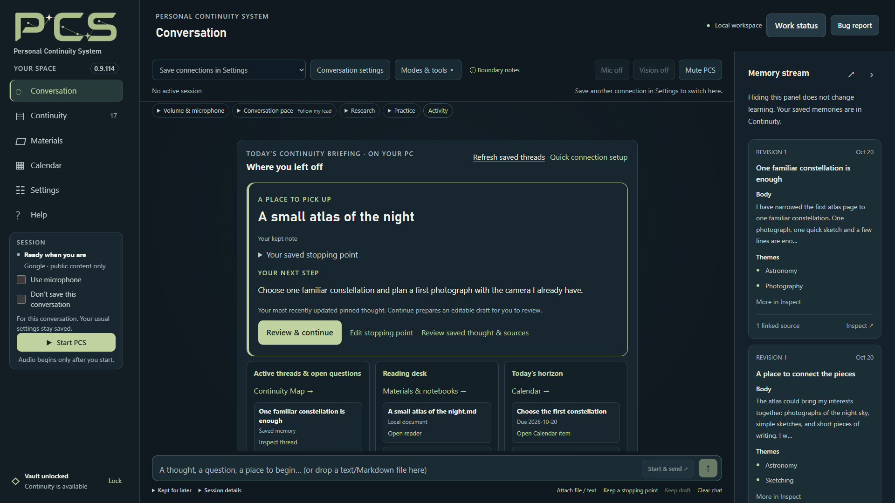
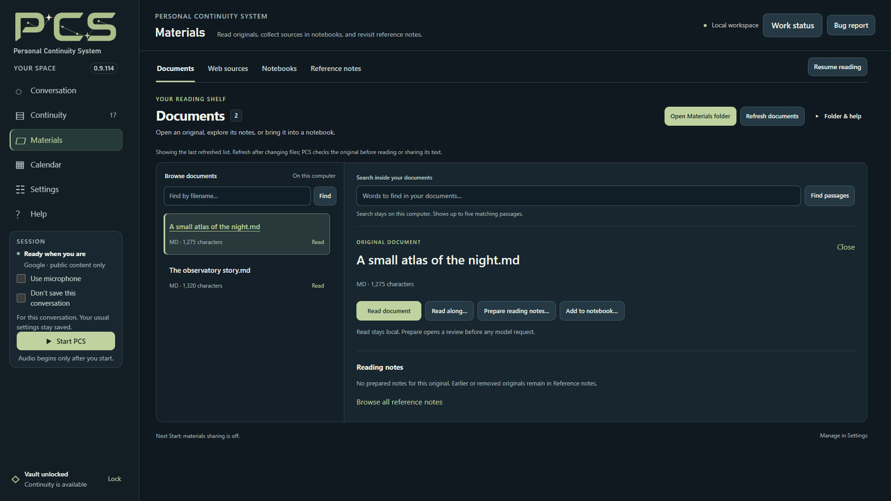

Download, extract, start.
Use the complete Windows ZIP. Extract it into a fresh writable folder, then open Start PCS.exe.
First launch prepares the bundled Python and ordinary dependencies offline. You do not need a separate Python installation. Tests, developer documents and build tools are in the matching Source ZIP. support\start.ps1 -Verify checks an installation offline. Optional AI models and speech packs are separate downloads.
Do not move just the launcher. GitHub’s automatic “Source code” archive is not the Windows app.
Check the download checksumLinux and Mac use earlier experimental builds: Linux x64 0.9.115 and macOS Apple silicon 0.9.114 Experimental 1. These are archived experiments, not 0.9.180 ports. Follow their included setup instructions; their features and verification differ from the current Windows package. Read the platform limits.
Create your vault with the setup guide.
Choose Get started on the Conversation welcome screen. The guide covers Workspace, Connection, Sharing, Voice, Screen and Review. Back, Next and Pause keep your edits. Finish setup saves the choices you review. For OpenRouter, loading models can create or unlock the encrypted vault first; it does not finish setup or save its connection choices. Create a long, unique passphrase of at least 15 characters and keep it somewhere safe. Choose Recommended continuity or Conversation only, then review what may be saved and shared with your chosen connection. Recommended continuity includes memory learning, correction upkeep, saved-topic awareness and original-source recall. For new vaults, it also enables optional helpers including PCS Perspective with independent interests, web and Study research with pictures, Materials sharing, saved Practice and Organize topics. Quick setup does not turn on the experimental memory settings, such as Let memories come to mind on their own. Reopening the setup guide later edits only the connection and keeps your other saved choices. PCS cannot recover a forgotten passphrase.
Not ready yet? See a fictional example on the welcome screen shows PCS with demonstration records, without adding anything to your vault.
These records live in your encrypted vault. Original Materials and readable exports are separate.
Bringing an existing vault?
Restore your encrypted backup into the empty installation before creating a new vault, from Vault options & restoring a backup in the first setup step. A fresh app folder does not automatically find your old data. Follow Updating and restoring below.
Connect one model.
In the setup guide’s Connection step, choose Google, OpenAI, Meta, Claude, ChatGPT, OpenRouter or Local. Enter your provider’s API key for Google, OpenAI, Meta, Claude or OpenRouter. If you choose ChatGPT, finish Quick setup, then sign in and choose Get ChatGPT ready in Settings → Connections. You can change connections later and keep the same vault.
- Choose Google under Conversation connection.
- Enter your Google API key and keep the suggested compatible model to begin.
- Choose the Personal content or Public content only profile that fits your Google project’s terms. PCS cannot verify or change those terms.
- Leave Use microphone off for your first typed conversation.
Provider API access and billing are separate from a consumer chat subscription. Permitted content is sent to Google. This cloud route does not require a Local AI GPU.
OpenAI
- Choose OpenAI under Conversation connection.
- Enter your OpenAI API key and keep the suggested compatible model to begin.
- Leave Use microphone off for your first typed conversation.
A ChatGPT subscription does not itself provide API access or credits. Permitted content is sent to OpenAI. New OpenAI setups default to Balanced turn-taking; existing saved choices stay as they are. This cloud route does not require a Local AI GPU.
Meta
- Choose Meta under Conversation connection.
- Enter your Meta API key and keep the suggested compatible Standard model to begin.
- Leave Use microphone off for your first typed conversation.
Typed Meta needs no local language model, speech pack or Local AI GPU. Permitted text goes to Meta. Optional microphone input uses a local listening pack; Windows, Kokoro or the selected matching Kitten pack speaks replies. This is not native Meta speech-to-speech. Model access and API charges depend on your account.
OpenRouter
- Choose OpenRouter in Quick setup and enter its API key. Choose whether to remember it in the encrypted vault.
- Choose Load models or Refresh models. If locked, Create or unlock vault & load models uses the passphrase from Workspace. The public catalogue request sends no API key, conversation or vault contents and generates no reply.
- Deliberately choose Models with text and tool support, or enter the Exact OpenRouter model ID. No model is selected automatically. Free models only and Image-capable models only filter the list without changing an existing selection.
- Review Sharing, optional Voice and Screen, then the exact model in Review and choose Finish setup. Finish checks the listed model’s tool support and, with Vision on, image support. This does not test the key or generate a reply.
OpenRouter and its selected upstream provider receive approved text, context and images under their terms. One OpenRouter key can cover conversation, memory, corrections and recall, preparation, notebooks, Practice, Calendar, PCS Perspective, web research and Wikipedia Study within the selected model’s capabilities and your permissions. Memory and Preparation can follow this connection; another provider is not required. Optional helper overrides remain explicit. Small open models did not perform memory work in release testing; choose a separate Memory model. Quick setup saves anthropic/claude-haiku-5.5 when no Memory model is set; for an existing blank setting, choose Use recommended in Settings. Free-model availability and usage limits vary; paid models and web-search plugin requests can charge credits, including search with free-model inference. PCS does not silently switch models or providers after a failure.
Local
- Choose Local on this PC.
- Open Local model & files. For the guided route, choose Gemma 4 12B and its matching runtime.
- Use Download to folder… or Use existing files…, then wait for verification.
The established Local route needs a compatible NVIDIA GPU. Model size, context, vision and GPU speech affect its memory requirements; no single verified memory minimum covers every setup. Keep model files outside the app folder. Typed Local needs no cloud AI key or speech pack. Model, hardware and voice details
Connect Claude or sign in with ChatGPT
Enter your Claude Console API key in Quick setup. With Recommended continuity, a new Claude setup uses Haiku 5.5 for memory and keeps your chosen model for conversation; change it under Settings → Connections → Memory. Existing Claude setups keep their memory model. Why a separate memory model. For ChatGPT, choose Sign in with ChatGPT in Settings → Connections after finishing Quick setup. Approve access in the browser, return to PCS and choose Get ChatGPT ready. Each newly opened PCS page needs this step.
ChatGPT sign-in uses an eligible account and its available models within account limits. It does not import ChatGPT history or silently switch to OpenAI API billing. Claude API access is separate from a Claude chat subscription.
Both support typed conversation, permitted PCS tools, personal memory, picture sharing through Vision, web lookup, Wikipedia Study and optional local listening and speech. In Memory & sharing, choose Follow conversation or select Claude or ChatGPT explicitly for learning, Remember requests and recall. Preparation, notebook drafts and PCS Perspective can also use the selected Claude or ChatGPT model. Neither connection maintains PCS’s cloud embedding index; word/navigation recall and the separately configured local semantic index remain available. What works depends on the selected model, account and sharing settings.
Retired Qwen connection and Custom models
The direct experimental Alibaba Qwen connection is retired. Existing saved evidence remains readable; replace a saved direct-Qwen connection explicitly before starting. Qwen-family models in the OpenRouter catalogue are separate model choices using OpenRouter.
Custom GGUF setups remain experimental and need compatibility checks. A successful short check does not establish long-session stability.
Review your settings and send a message.
Finish setup after reviewing the connection, continuity choice and Calendar time zone. You can adjust the individual controls later in Memory & sharing and Save settings. New Personal content and Local setups use Only when I ask for Calendar assistance; Public content keeps it private and manual. Saving setup does not test a key or generate a reply. For Meta, Claude, ChatGPT, OpenRouter and Local AI, the optional Voice step guides you through choosing local listening and speech. Its download buttons for the listening pack and the Kokoro voice need your vault, so they are hidden until setup creates it and appear right after Finish setup. The Screen step guides OBS setup and scene selection. Once the vault is unlocked and setup is saved, type a message and press Enter or Start & send ↗ to start and send it. You can also choose Start PCS first.
“I have a project I keep putting off. Help me work out a useful first step.”
Or get acquainted.
Get acquainted → starts a relaxed first conversation that PCS begins, with nothing to fill in. It appears after you save connections in Quick setup. Skip anything or change the subject whenever you like.
Normal saving, learning and sharing settings apply. Inspect and correct what was kept.
You can also just browse. Library, the Map, manual notebooks and Calendar do not require a running AI.


Add voice, documents and other tools.
Start Study research from Materials → Reference notes and Practice from Materials → Notebooks. Research this question is below the Conversation message box.


Return to a saved stopping point
With the vault unlocked, choose Load saved threads on the welcome screen to check saved threads, open Kept-for-later notes, local Materials and upcoming open Calendar plans. This is a local check, not an AI request. Choose a Calendar time zone to see upcoming plans.
Open a thread, reader or Calendar item to inspect it. Your most recently updated pinned open thought appears first, or a recent open kept thought when none is pinned. Expand its wording, sources and warnings, then choose Review & continue. PCS prepares an editable draft with your stopping point and next step, while protecting an existing unsent draft. Sending remains your choice. Load again when you want current results.
Use relevant memory and explore a connection
With personal-memory sharing enabled, Local can check saved context for a question about you or an earlier project without a separate “use memory” command. The optional Help notice relevant memories in conversation setting is separate from that check; it is also included in the setup guide’s reviewed Recommended continuity choice. See the choices and connection differences. The experimental Let memories come to mind on their own is off unless you turn it on; it can give the model related memories as you talk. How memory reaches a conversation.
The Map opens on All links. Themes come from saved labels and repeated wording; in Local memory, each saved observation counts, and the people, places and projects it names become linked themes. Follow a theme into Focus, use Compare with… to explore a route, or try Discover a connection. Inspect its supporting records in the side panel and leave your own connection note or landmark. Filters and coverage are under Map settings; saved views and connection notes are under Views & notes. A kept thought can Explore in Map with a temporary reminder of its title and next step. The separate Jev Library exploration trial requires review before sharing saved excerpts with TypeSafe.
Review a text attachment before using it
Attach or drop a UTF-8 .txt or .md file into Conversation. Review the complete text, then place it in an empty chat draft, open a Keep review, or choose Save reviewed text in Materials. Review alone does not send it to a provider.
The attachment limit is 480,000 bytes and 120,000 characters. Chat and Keep have smaller limits; an action that cannot fit leaves the attachment intact rather than shortening it. HTML and other document types belong in the ordinary Materials workflow below.
Saving in Materials requires PCS to be stopped and writes the exact text as an ordinary, unencrypted local file outside the vault. It needs a separate backup. An identical retry reuses the copy; another file is not overwritten. Web source drafts and previews remain separate.
Choose how PCS joins the conversation
Before Start, choose a Conversation pace: Follow my lead, Think with me or Take the lead. Wait for confirmation that your starting pace was saved; use Quiet for now or Stay here during a conversation to pause optional suggestions or keep the current direction. With Don’t save selected, the pace choice stays in this page.
The default Companion direction gives PCS opinions, tastes and dry humor without inventing a human life story. Recognized factory wording can update; custom directions stay as written. Conversation initiative, pace and PCS Perspective choices remain separate.
Local also offers Allow brief quiet-moment openings in Local. It is off by default and is not restored from saved Settings. Explicitly choose it with Take the lead before Start. Openings require a focused, quiet Conversation page and stop when you type, leave, choose Quiet or Stay here, or Stop. The option can add a Local request before a reply. Read the limits and setup
Keep wording for later, then choose where it belongs
Use Keep a stopping point below the composer to title and write where you stopped. Add an optional next step and pin the thought for your return. You can also use Keep wording for later on supported saved records and messages. Review the complete wording, title and recorded author. Keeping a quotation does not turn it into your own belief or automatically share it with a model.
The encrypted Kept for later shelf holds up to 128 items. Edit your own note, mark it resolved, reopen it or delete it. Saved quotations keep their wording and authorship; your next step stays separate. Continue places the complete, labeled wording in an empty conversation draft for review; it does not send it. Add quoted thought… can place a separate quotation in an existing notebook’s general notes or a lesson, or a new Calendar task, goal or event. Write your framing separately, inspect the preview, then save.
If the save result is uncertain, use Check unconfirmed addition before trying again. Removing a shelf item leaves an already-saved quotation in its destination; remove that quotation there. Quoted contributions remain separate from ordinary model-facing note text.
Remember and inspect something
Enable saving and learning, then inspect the result in Continuity → Library. Open its sources and correct an interpretation if it misses your meaning. Use Settled, links & lessons to mark an exact revision as your current view, connect how ideas developed, or keep a named lesson with its story and supporting memories. Library search includes separate My Map notes and Practice history scopes, with coverage limits shown. Use Saving & memory health to check pending work. Follow the memory workflow
Use your microphone or a reply voice
Review the selected provider’s audio settings, enable Use microphone, Start, and allow browser access. For Local, Meta, Claude, ChatGPT or OpenRouter, select a listening pack and reply engine under Settings → Optional tools → Local listening & voice. A spoken turn can run to 60 seconds and ends after 1.5 seconds of silence. Local voice choices
Read and keep a project notebook
In Documents, open the Materials folder and add a supported PDF, EPUB, Office, OpenDocument, RTF, subtitle, HTML or common text/code file. Refresh while stopped and inspect its extraction coverage; scans need OCR elsewhere. Read manually, or review the provider and source scope before preparing notes. Prepare book works through an approved bounded sequence, saving a checkpoint after each portion. Resume preparation reviews the remaining scope. Local portions can use up to 80,000 source characters when the complete request fits. Search saved notes by topic and inspect coverage or extraction omissions. Keep questions and next steps in a notebook.
Read along, discuss, and return to your place
Choose a readable PDF or saved Web source, then Read along. An available local browser/OS voice speaks the extracted text and pauses at section boundaries. Discuss what we read prepares a recent passage and question for review before sending; Return to reading resumes the paused source.
Save bookmark keeps an encrypted position tied to that extraction. Materials → Documents → Resume reading also lets you review and remove old positions when the original changed or disappeared. Reading alone does not form memories or send the source to an AI.
Save a public source
Use Materials → Web sources, or Read / save source beside a research citation. Explicit capture supports readable public pages, PDF/EPUB, RSS/Atom and selected GitHub, MediaWiki and Stack Exchange responses. Review the available text and coverage before saving. Sign-ins and script-rendered pages remain outside static capture.
A saved source is a retained snapshot. Preview updated version keeps its reader and history link; review and save the new snapshot separately. Local AI does not turn on downloads automatically.
Choose activity memories or explore a question
Open Activity to set details manually or review which saved memories may be used in that scope. For spoiler-limited stories, inspect complete current memories before approving them. Changed activity settings and saved accounts need fresh review; some changes apply in a fresh conversation. Enabled public research has its own permission and needs no extra activity approval. Spoiler avoidance is best effort.
Automatically follow my current activity and its classification tools are removed. Ordinary saved-context sharing no longer waits for a model to classify the conversation; manual activity details, approvals and Conversation pace remain available.
The former Explore another perspective action has been removed from Activity. Use PCS Perspective instead.
Turn on PCS Perspective
PCS Perspective is an optional, separate space in your encrypted vault for PCS’s interests, interpretations and open questions. Recommended continuity enables it with independent interests for new vaults. Open PCS Perspective beside Activity and review Enable PCS Perspective, Allow independent interests and Allow thinking pauses with microphone input off, then Save choices. Inspect wording, evidence references, uncertainty, model authorship, revision history and its separate Map.
Background thinking keeps enabled microphone input on, including when you invite PCS to think it over. Explore now offers a focused pause with input off; choose Return to conversation to interrupt it. Each step thinks first, then files its conclusion. A finished thought can join the next ordinary reply, at most four times an hour.
Exploration requires an eligible running saving conversation and uses the displayed Preparation model, including OpenRouter or matching Local. It can send recent saved conversation and saved perspectives to that model and make extra requests; relevant views may also reach the Conversation model. It does not independently browse the web or read Materials. These inspectable records do not establish subjective experience. Perspective controls and sharing
Save Practice attempts
For saved Practice, create a Tutoring & practice notebook with a lesson, enable Remember my practice, then use Materials → Notebooks after Start. Submit answers through the Practice card to keep those attempts. A correction that finishes after you edit again preserves the later draft. Recovered correction text is offered for manual copying into its original attempt after you inspect the saved assessment; PCS does not replay the save.
Add a task or event
Open Calendar to create a local task, goal or event. Check its time zone and saved result. Choose Only when I ask if you want AI changes limited to direct Calendar requests. Calendar has no external sync or reminder delivery.
Stop, Lock and Quit do different jobs.
Ends conversation and capture.
Closes access to the vault.
Shuts down the host. Wait for “PCS closed.”
Closing the tab alone can leave PCS running. Check saving health before quitting. If saving needs recovery, keep PCS open and follow Recover saving with this vault’s passphrase.
Updating and restoring.
Save your work, quit PCS and back up the entire stopped data folder, including any custom data directory. Copy original Materials separately if stored elsewhere. Keep your previous app folder while checking the update. Follow the included Backup & restore guide to copy your data into a fresh installation or use the encrypted backup option below.
Coming from 0.9.164: the three experimental memory settings stay off until you turn them on, and an existing Claude setup keeps its memory model. If Let memories come to mind on their own is already on in your vault, it now also applies on OpenAI Realtime and Google Live, where it can add paid replies. With local speech on an NVIDIA card, the first Start after installing takes about half a minute longer than later ones.
Make the backup before you update
- Leave the vault unlocked, stop the conversation and let background work settle.
- Open Settings → Privacy & maintenance → Backup & restore. Choose Save current backup… for a copy using the vault passphrase, or Create protected backup… for a separate backup passphrase. Choose the destination in Save As and wait for the confirmed save.
- Copy original Materials separately; they are outside the vault.
- Use Quit PCS and wait for PCS closed.
A readable export is useful for reading; it is not a restorable encrypted vault backup. Prepared reading notes and retained Web sources are included in the vault backup; original local Materials files are not.
Optional automatic backups run while PCS is open, its browser page is connected, the vault is unlocked and the conversation is stopped. They pause during Don’t save. They retain the newest automatic copy from each of the 14 most recent days and 8 most recent weeks. Keep a separate copy if you need it beyond that window.
Move into a fresh app folder
- Extract the complete new Windows ZIP into a fresh folder and open Start PCS.exe. Do not create a vault there.
- Choose Restore an encrypted backup instead. Select the
.pcsfile and enter that backup’s passphrase, which may differ from the old working vault’s. - Choose Check backup. Review the record counts and minimum PCS version, then choose Restore this backup. Restore never replaces or merges an existing vault.
- After confirmed restore, unlock with the backup’s passphrase. Copy unchanged original Materials into
data/Materials, preserving filenames, contents and subfolders, then use Refresh documents while stopped. - Choose the automatic-backup destination again after restoring. Keep Local model and speech files in their existing separate folder and reselect them if needed. Inspect memories, notebooks, prepared notes, Calendar and Settings before relying on the restored copy. Keep the old installation and backup until these checks are complete.
Never run two installations against the same data directory. Native encrypted backup/restore supports vaults up to 2 GiB. Saved features can raise the minimum supported PCS version. OpenRouter connection data requires 0.9.151 or later; new OpenRouter helper data and Practice assessments exceeding the former 4 KiB record limit require 0.9.152 or later. Earlier requirements still apply, including 0.9.122 for PCS Perspective, 0.9.126 for native Claude/ChatGPT features and Local research, 0.9.130 for the newer cloud search index and 0.9.134 for Claude/ChatGPT memory-thread suggestions. Opening or browsing alone does not activate these requirements; removing a newer record does not lower a recorded floor. Check backup reports that copy’s actual minimum. See reader compatibility and the current release notes, and keep the pre-upgrade backup for rollback.
After upgrading an existing Map connection index, choose Map settings → Coverage → Finish indexing to rebuild it locally. 0.9.139 records each Local observation in the index, so earlier index entries are not used until this finishes; meanwhile the Map reads up to 1,500 matching memories directly. This does not rewrite your memories or contact a provider.
The old proactive-help controls and automatic activity following remain retired. Save settings clears their old saved controls; manual Activity details remain. If a Jev approval included a retired setting, review it again. Replace any saved direct-Qwen connection explicitly; PCS does not choose another provider for you.
Change AI models and keep your saved records.
Your saved memories, corrections and notebooks stay in PCS when you change to another supported AI model or provider. For example, you can move from a cloud conversation to a compatible Local model without recreating your saved memories and notebooks.

- Save unfinished edits and choose Stop PCS. Wait for saving to settle.
- Open Settings → Connections and choose a supported conversation provider and model. Configure its API key, ChatGPT sign-in or Local files as needed. Check the memory and Preparation helper choices separately.
- Review Memory & sharing, then Save settings. Permission to share original excerpts and corrected memories follows the selected provider. The switch notice names the provider that will receive them. Turn personal memory sharing off to stop sharing those records.
- Start a new conversation using the same vault. PCS can recall selected saved evidence within your permissions and the model’s context limits.
Saved cloud setups are named connection presets. They reuse the provider’s saved key or selected ChatGPT account while memory-sharing controls remain in Settings.
Existing saved originals, memories, corrections and notebooks stay in the vault. A switch does not migrate the previous provider’s internal conversation state, and different models may respond or recall differently. Check feature compatibility before relying on voice, vision or tools.